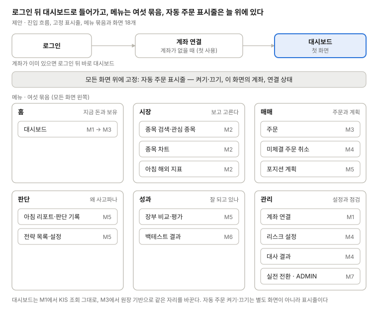
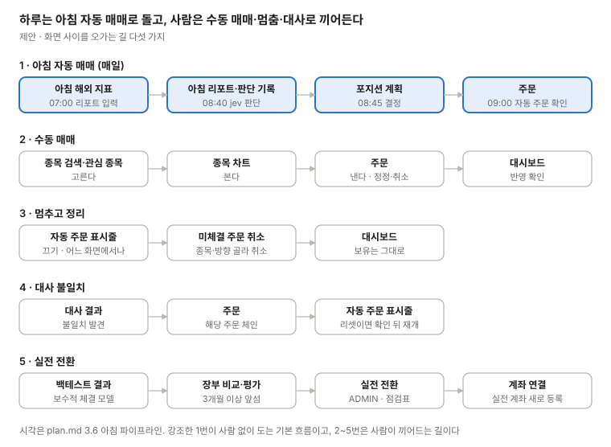

stock 화면 설계
쓰는 법
- 화면 설계의 원본은 이
design/폴더다. 승인 기준은 Git 커밋으로 CLAUDE.md "디자인"에 기록한다. Claude Docs 탭 rev·그림 pub은 쓰지 않는다 - 토큰·컴포넌트의 원본은
frontend/코드이고, 카탈로그는 Storybook이다(M1에서 설정). 여기 "공통 UI" 페이지는 구현 전 설계이며, 구현되면 카탈로그로 옮기고 이 페이지는 링크만 남긴다 - 데이터 근거는 B-02 모의 실측(
docs/planning/kis-verification.md)이다. 실전은 따로 확인한다 - 초안을 그린 Claude Docs 문서와 검토 댓글은 참고 자료다
정보 구조와 흐름
로그인 뒤 첫 화면은 대시보드이고, 메뉴는 여섯 묶음으로 나누며, 자동 주문 표시줄은 모든 화면 위에 고정한다(제안).

화면 사이를 오가는 길은 다섯 가지다. 1번 아침 자동 매매가 매일 도는 기본 흐름이고, 나머지는 사람이 끼어드는 길이다.

- 메뉴 묶음의 이름·순서와 첫 화면은 제안이다
- 계좌는 상품마다 하나다(결정 2026-10-15). 주식 계좌와 선물옵션 계좌처럼 상품이 다르면 다른 계좌이고, 계좌를 고르는 메뉴는 두지 않는다. 화면이 쓰는 계좌를 표시줄에 보인다. 지금은 선물옵션 계좌로 주문하지 않으므로 모든 화면이 주식 계좌다
- 화면 사이 링크는 각 화면 제목 줄의 "▸"와 목록 행의 링크로 그렸다. 여는 방식은 결정 (2026-10-18) 표를 따른다
결정 (2026-10-16)
와이어프레임 검토 뒤 정한 것이다. 컴포넌트와 화면은 이 표를 따른다.
| 항목 | 결정 |
|---|---|
| 자동매매 멈춤 | 리셋 판정의 "자동매매 멈춤"은 자동 주문 끄기와 같다. 켜기·끄기 하나로 구현하고, 표시줄은 꺼진 이유를 함께 보인다. 리셋 동안 강제 청산도 멈춘다 |
| 신규 매수만 건너뜀 | Ollama 장애·대사 불일치·일일 손실 한도는 끄기와 별개다. 토글은 켜짐, 표시줄에 "오늘 신규 매수 건너뜀"과 이유를 보인다 |
| 전략 멈춤 | 전략 상태 PAUSED(멈춤)를 더한다. 정지 버튼으로 들어가고, 그 전략의 새 주문만 막는다. 낸 주문과 보유는 그대로다 |
| 전략 파라미터 적용 | 저장하면 다음 거래일 07:00 아침 파이프라인부터 적용한다 |
| 실전 | M7 전에는 계좌 연결의 "실전"과 전략의 실전 전환을 비활성으로 둔다 |
| 백테스트 표시 | 실행 설정에 미래 정보 차단(available_at)과 jev 입력 익명화 적용 여부를 보인다 |
| 색 | 상승·매수 빨강, 하락·매도 파랑 |
| 로그인 | 이메일 + 비밀번호 |
| 수수료·세금 | KIS는 합친 추정치(prsm_tlex_smtl)만 주므로 원장에는 "제비용(추정)" 한 행. 확정 값을 받으면 FEE·TAX로 나눈다 |
| 주문 가능 금액 | 주문 화면은 우리 계산값만 보인다. KIS 값은 대사 결과에서 비교한다 |
| 미체결 취소 목록 | 주문 단위로 묶고, 펼치면 번호별로 보인다 |
| 차트 기본 시장 | KRX |
| 계좌 목록 상태 | 새 컬럼 없이 토큰 상태(유효·만료·실패)로 보인다 |
| 회차 상태 | 대기 → 주문 나감 → 체결, 그 밖에 보류·취소 |
| 한도 경계 | 계좌 단위 한도는 리스크 설정, 전략별 값은 전략 화면 |
| 대시보드 새로고침 | 장중 30초(가정값), 장 밖에서는 수동 |
| 더한 열 | 장부 비교의 샤프 비율·회전율(strategy.md 16.2), 백테스트의 슬리피지·수수료(plan.md 3.9)는 남긴다 |
- 문서 어긋남: 일일 손실 한도를 plan.md 3.7은 "그날 자동매매 정지", strategy.md는 "그날 신규 매수 중단"이라고 적는다. 위 표는 strategy.md를 따랐다
결정 (2026-10-18)
화면 수정 뒤 남은 결정을 추천대로 정했다. 기획 규칙 항목은 B-23 spec 때 해당 문서에 옮긴다.
| 항목 | 결정 |
|---|---|
| 토큰 발급 실패 | 표시줄 변형 8 "증권사 연결 실패"(위험 띠). 주문과 강제 청산이 모두 나가지 않음을 보인다 |
| 데이터 수집 실패 | 변형 4(오늘 신규 매수 건너뜀)의 이유에 더한다 |
| 꺼진 동안 수동 주문 | 같은 확인 창에 경고 줄, 실행 버튼 문구 "꺼진 상태에서 보내기" |
| 한도 저장 확인 | 조이기만 해도 확인한다 |
| 화면 사이 링크 | "▸"는 그 화면을 해당 항목이 펼쳐진 상태로 연다. 주문은 clientOrderId로 연다 |
| 등락 값 | 국내는 KIS 응답 필드, 해외 지표는 일봉 둘로 계산 |
| 종목·시장 표시명 | 거래정지, 상장폐지, 휴장을 상태 표시명에 더한다 |
| 실전 전환 확인 | 계좌번호 끝자리 입력까지 받는다. 자동 주문 꺼짐·리셋 판정 중에는 막는다 |
| 실전 되돌리기 | 실전 운용은 멈춤만 가능하고 모의로 되돌리지 않는다 |
| 백테스트 비교 대상 | 운영(보수적 재계산) |
| 같은 봉의 손절·목표가 | 손절 먼저 |
| 수동 주문에서 경고만 할 한도 | 종목당 비중·일일 손실은 경고, 주문당 금액·미수 금지는 막음 |
| 리셋 뒤 3개월 기준 | 성과 구간마다 새로 센다 |
| 사람이 끈 뒤 리셋 판정 | 확인을 마쳐도 꺼진 채로 둔다 |
| 자산 추이 | 일별 스냅샷 테이블(plan.md 5장에 추가) |
| 모의 운용 전략 | 한 번에 하나만 |
| 파라미터 변경과 진행 중 계획 | 계획을 만들 때의 값을 유지한다 |
| 계획 만료 | strategy.md 9.3 본문대로 남은 회차만 취소하고 HOLDING (그림의 CANCELLED는 고침) |
| 키 교체와 성과 구간 | 계좌번호가 같으면 같은 구간 |
| 미룸 | 실전 계좌의 리스크 한도 저장 위치(B-11), 보유 수량 차이 보정 방법(M4 대사 설계), 회차 재확인 0.5 미만·jev 보정 최소 표본·매도 사후 평가 N일(M5) |
- KIS 확인(B-02 남은 확인): 463,305원의 종목, NXT·통합 과거 봉 TR, 야간선물 종가 출처, WebSocket 구독 한도, 모의 계좌 만료 기간
화면 목록
화면 18개는 frontend.md 화면 목록과 같고, 마일스톤 순서로 놓았다.
| 마일스톤 | 화면 | 내용 | 차트 | 상태 |
|---|---|---|---|---|
| M1 | 로그인 | 비밀번호 로그인 | 초안 | |
| M1 | 계좌 연결 | 증권사, 모의·실전, 계좌 종류, 계좌번호, App Key·Secret, HTS 아이디, 만료일 | 초안 | |
| M1 | 대시보드 (첫 판) | 모의 계좌 잔고, 보유 종목, 평가 손익 (KIS 조회 그대로) | 초안 | |
| M2 | 종목 검색·관심 종목 | 종목 마스터 검색, 관심 목록 | 초안 | |
| M2 | 종목 차트 | 일봉·분봉 캔들, 거래량, 실시간 가격 | Lightweight Charts | 초안 |
| M2 | 아침 해외 지표 | 간밤 미국 일봉(S&P 500, SOX, VIX, 환율, 10년물), KOSPI200 야간선물 | 표 | 초안 |
| M3 | 주문 | 매수·매도·정정·취소, 미체결·체결 목록, 체결 알림, 매매 표시와 평균 단가선 | Lightweight Charts | 초안 |
| M3 | 대시보드 (원장 기반) | 내부 원장 잔고, 금액 원장 내역, 자산 추이, 종목별 비중 | Recharts | 초안 |
| M4 | 리스크 설정 | 한도 값 편집 | 초안 | |
| M4 | 자동 주문 켜기·끄기 | 모든 화면 상단에 고정된 토글과 현재 상태 | 초안 | |
| M4 | 미체결 주문 취소 | 종목·방향을 골라 그 미체결만 취소 | 초안 | |
| M4 | 대사 결과 | KIS와 내부 장부의 차이, 복구 기록 | 초안 | |
| M5 | 아침 리포트·판단 기록 | 그날 리포트, jev 판단과 근거, 사이징 결과 | 초안 | |
| M5 | 포지션 계획 | 분할매수 회차, 목표 주가, 무효화 가격 | Lightweight Charts | 초안 |
| M5 | 전략 목록·설정 | 전략 상태, 파라미터 | 초안 | |
| M5 | 장부 비교·평가 | 장부 4개의 비용 차감 후 수익률·MDD, jev 보정, 매도 사후 평가 | Recharts | 초안 |
| M6 | 백테스트 결과 | 자산 곡선, 거래 내역, 모의 운용과 비교 | Recharts | 초안 |
| M7 | 실전 전환 | ADMIN 전용 실전 모드 전환, 실전 전환 기준 점검표 | 초안 |
가정으로 그리는 것
B-02에서 아직 확인하지 못한 것은 아래 가정으로 그리고, 결과가 나오면 해당 화면만 고친다.
| 미확인 | 가정 | 화면 |
|---|---|---|
| 장 마감 소멸 통보 | 통보가 없을 수 있다. 마감 뒤 조회로 "소멸"을 확정한다 | 주문, 대사 결과 |
| 시간외 주문 | 모의에서 거부된다. 주문 폼은 정규장만 받는다 | 주문 |
| 분봉 조회 기간 | 제한이 있다. 차트 기간 선택은 일봉 위주로 둔다 | 종목 차트 |
| KOSPI200 야간선물 | KRX 공시 기준 18:00~다음날 06:00, 거래일은 끝나는 날 | 아침 해외 지표 |
| 평가 손익 필드 | 잔고 조회에 있다 | 대시보드 (첫 판) |
| 수수료·세금 확정값 | 없다. 추정치로 표시한다 | 대시보드 (원장 기반), 장부 비교·평가 |
| jev 응답 모양 | 입력한 criteria별 선택지 확률 | 아침 리포트·판단 기록 |
| 해외주식 주문 | 다루지 않는다(분석 전용) | 주문 |
| 실전 전환 점검표 | strategy.md 16.3 항목을 그대로 쓴다 | 실전 전환 |